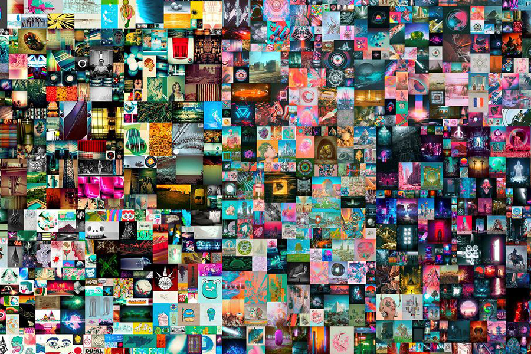

Майк Винкельманн
Биография
Майк Винкельманн (род. 20 июня 1981), известный под псевдонимом Бипл (англ. Beeple) — американский цифровой художник, графический дизайнер и аниматор,
создающий комические и фантасмагорические произведения, посвящённые актуальным политическим и социальным темам и использующие отсылки к явлениям
поп-культуры. С 2007 года он каждый день выпускает новое изображение в рамках проекта «Ежедневно». Коллаж из изображений этой серии Ежедневно: первые
5000 дней (англ. Everydays: the First 5000 Days) был продан 11 марта 2021 года за 69,34 миллиона долларов, что сделало его третьим по стоимости произведением
современного искусства[1]. Работа была продана как невзаимозаменяемый токен, и стала первым произведением такого рода, проданным на аукционе «Кристис».
Карьера художника
Винкельманн создал серию работ «Ежедневно», публикуя новое изображение каждый день, начиная с 1 мая 2007 года. С тех пор он не пропустил ни дня.
Новые изображения Винкельманн публиковал даже в день своей свадьбы и в день рождения его детей.
На запуск проекта его вдохновил Том Джадд, который писал новую картину каждый день в течение года. Винкельманн решил, что это эффективный способ
улучшить свои художественные навыки.
В последующем он каждый год фокусировался на новом навыке или изобразительном средстве. Например, в 2012 году он использовал Adobe Illustrator, а в
2015 — Cinema 4D[8]. Работы Винклеманна часто изображают антиутопическое будущее[9]. Часто он использует узнаваемые образы популярной культуры или политики,
чтобы создавать актуальную сатиру.
Некоторые работы Винкельмана вошли в коллекцию прет-а-порте Louis Vuitton весны/лета 2019 года.
Продажи через токены
В октябре 2020 года Винкельманн начал продавать невзаимозаменяемые токены на свои работы через сервис Nifty Gateway. Цифровое изображение в форме файла
связывалось с уникальным токеном в блокчейне. Токен подтверждает право владения и может передаваться другому человеку.
Внимание привлекла работ «Перекресток», которая могла превратиться в одну из двух анимаций в зависимости от победителя президентских выборов в США 2020 года.
Это изображение было продано автором за 66 666,66 долларов, а в феврале 2021 года перепродано за 6,6 миллиона долларов.
Коллаж изображений из серии «Ежедневно» под названием «Ежедневно: первые 5000 дней» 25 февраля 2021 года был выставлен Кристис со стартовой ценой 100 долларов
на двухнедельный онлайн-аукцион, который 11 марта завершился на отметке 69,34 миллиона долларов. Впервые объект в форме уникального токена был продан традиционным
аукционным домом, и он стал первым лотом для Кристис, который могли оплатить в Ethereum.
Винкельман сообщил, что в конце апреля 2021 года выпустит весеннюю коллекцию работ, которая также станет доступна для приобретения в форме уникальных токенов.
Ссылки
На сайте использована информация из Википедии и личной страницы Майка Винкельманна. Сделано в 2022 году.